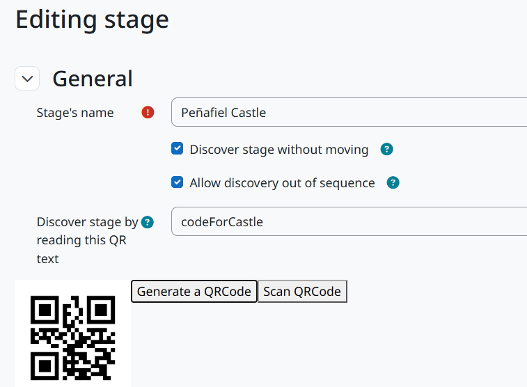
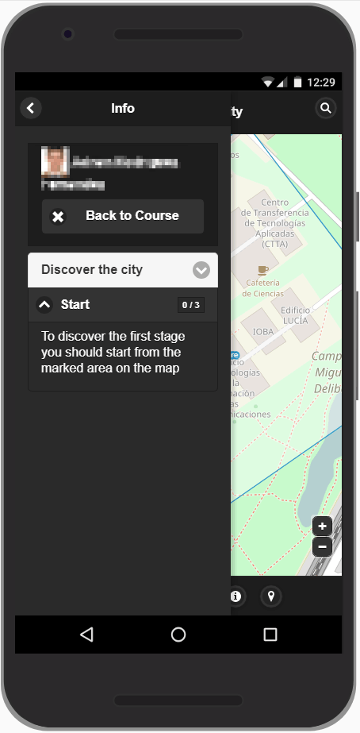

When QR works well
QR labels fit museums, buildings, exhibitions and compact outdoor sites. A participant scans the label associated with a stage instead of depending only on their device’s location. You can use a QR label you already have or generate one from the stage editor.


Prepare a QR stage
- Create the road and stage. Write a clue that leads to the physical object or room without exposing the QR value itself.
- Enable discovery by QR in the stage form. Enter an existing code value or generate a code from the editor.
- Place or print the code where it can be scanned safely. Check lighting, reflections, print size and access for wheelchair users.
- Use a real phone to test the QR flow before the class starts. The activity page includes a scanner test when QR stages are present.
What students do
Open the game in a phone browser, allow camera access when asked and point the camera at the label. If the browser offers front and back cameras, choose the rear camera. The game records the successful discovery and presents the next available clue.
Design considerations
Avoid putting answers or sensitive information inside a QR code. Treat the label as a discoverable marker: the meaningful learning content belongs in the stage clue and question. Keep a replacement printout for labels that are damaged or moved.